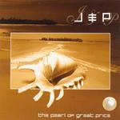

| Artist: | Jeremy/Progressor |
| Title: | The Pearl Of Great Price |
| Label: | Mals MALS 035 |
| Length(s): | 68 minutes |
| Year(s) of release: | 2005 |
| Month of review: | [10/2005] |
| 1) | Desert Winds | 10.02 |
| 2) | Spiral Vortex | 10.02 |
| 3) | Alien Nation | 6.08 |
| 4) | Pearl Of Great Price | 4.43 |
| 5) | Battle Zone | 5.30 |
| 6) | Final Victory | 10.47 |
| 7) | The Journey Home | 20.41 |
Spiral Vortex opens with mellotron, not a bad start usually. The atmosphere is one of foreboding. However, it seems like we take a turn here as we move into Ozrics territory. The synths swirl, the beepers blorp, well I guess you get the picture. What is so strong about this song, is the sense of foreboding that sometimes creeps into the music, something you hardly ever hear with the groove oriented music of the Ozrics. In the meanwhile, the sequencers dribble along, and the furious guitar of the previous guitar also set in. Trippy bombast.
The twosome continue their melodic and high energy brand of electronic music and progrock on Alien Nation. Again, the guitar wails and quails, but this time there is also time for some soothing peace and quiet with tinkling tunes and bells. Then it is time for percussion as the bass starts to drone. The drums sound real at this point, not programmed. If you like say Gandalf's From Source To Sea, then I would say that this is an excellent continuation of that work. It all sounds electronic if you listen superficially, but listening closely the amount of guitar and such comes to the surface.
Often the title track is the longest track. Not here. Pearl Of Great Price This one is a bit more electronic than its predecessors, bringing Jarre to mind as did the first track. However, the somewhat rowdy guitar plays around some nice thematic work. Rhythmically however, the song is not so interesting. But the guitar hero stuff is quite intense.
Battle Zone is indeed that. Military drums, rather shrill keyboard sounds and at times a rather active passage with guitars and drum computers going over the top. This is close to progmetal, maybe Patrick Rondat is a name to coin here. Still, not my favourite.
We still have two tracks left, Final Victory is the first of these, the epic tune The Journey Home the last one. Final Victory opens sequencer based, after which a meandering guitar picks up the lead, the sequencer moving to the back. This is quite comparable to material by Tangerine Dream, but with some dissonant outbursts. And listen to those Boulderdash sound effects! The final part is a lot more friendly, but also strongly rhythmic and quite monotonous.
The closer then is a twenty minute opus which opens with some nice thematic work (did I maybe hear that on a previous track or was that a previous listen?). The melodic material is a bit stronger again than on the last few tracks which were not of the level of the opening tracks. Does this track offer anything different from the others? Not really, most striking element is probably the ethnic element. The final five minutes is an exercise in bringing forth different synth sounds. Some of these are restful, other a bit harrowing.